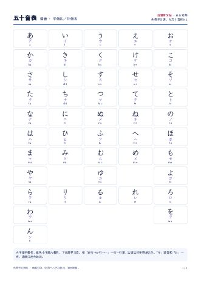
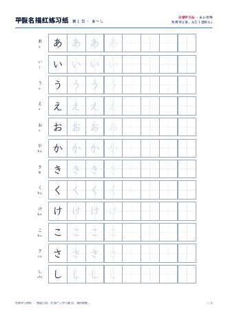
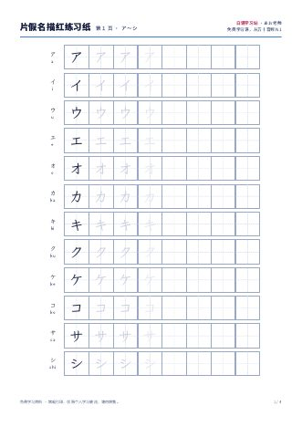

五十音表和描红练习纸，A4 大小，打开就能打印。仅限个人学习使用，欢迎分享本页链接。

平假名、片假名和罗马音对照，第 2 页是浊音、半浊音和拗音。贴在书桌前，随时看一眼。

46 个平假名，每个先描 3 遍，再自己写 4 遍。带十字格，方便看准比例。

46 个片假名，格式和平假名练习纸一样。シ/ツ、ソ/ン 这些容易混的，多写几遍就分得清。
打印时选「实际大小」或「100%」，描红格的比例最准。配合 五十音页 的点读发音一起练，效果更好。